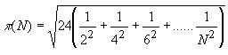

Descripción:
- Desarrollarán los algoritmos y
programas de algunos problemas que implican el uso del ciclo while.

Objetivos:
- Aplicar el ciclo while en la
solución de problemas.
- Utilizar funciones acompañadas
de la estructura "while".
- Desarrollar la habilidad de
hacer frente a los inconvenientes del uso de estructuras cíclicas,
es decir, en caso de que una función se cicle, deberás ser capaz de
identificar el elemento que provoca este mal funcionamiento.
- Ejercitar la habilidad de
hacer frente a los mensajes de error que envía la herramienta de
desarrollo.
- Desarrollar habilidades de
sociabilización mediante el proceso de trabajo en equipo.
- Ayudar a tus compañeros a
encontrar la mejor solución a los programas.

Modalidad y forma de trabajo: Diseño colaborativo, implementación
individual.
- Intégrate con tu equipo colaborativo y sigue las indicaciones
del profesor.
- Junto con tus compañeros de equipo, analiza cada uno de
los ejercicios que se presentan a continuación.
- Identifiquen, en
equipo, cual sería el algoritmo para la solución de cada uno
de los ejercicios. Recuerden documentarlos en sus hojas membretadas.
- De manera individual escribe un programa en
Python para cada uno de
los ejercicios. Recuerda basarte en el algoritmo que se generó en
el equipo.
- Una vez que hayas terminado tus programas,
apoya a tus compañeros de equipo con las dudas que tengan (no hagas el
laboratorio por ellos ya que esto sólo los perjudica).
- Entrega por Canvas, los archivos *.py que
contengan los programas en Python.

Instrucciones:
Utiliza el
siguiente esquema como apoyo para desarrollar tu laboratorio:
Estructura
del while
while
expresion:
instruccion
ó
while
expresion:
instruccion1
instruccion2
...
instrucciónN
Implementa las siguientes funciones haciendo uso del ciclo
while:
- La función
potencia que recibe 2 números
enteros x y n y regresa el resultado de elevar x
a la n. Como la posibilidad de que el resultado sea
relativamente grande, es conveniente que el tipo de dato de la
función sea float, ya que si la propusiéramos como int, muy
seguramente desbordaríamos su capacidad. Utiliza el ciclo while.
El encabezado de la función, podría ser el siguiente:
def potencia
(x, n):
- La función
sumatoria que recibe un valor
entero n mayor o igual a 1 y regresa el resultado de la
siguiente sumatoria. Utiliza el ciclo while y la función
potencia implementada anteriormente, es decir, en lugar de
utilizar la función pow(x,y), utiliza la función
potencia(x,y) para elevar por ejemplo
i5.

- La
función serie que recibe
un valor entero n mayor o igual a uno y regresa el resultado
de la siguiente serie: .
serie(N) = 31 -
32 + 33 - 34 + 35....
Por ejemplo:
serie(2) = 31 -
32 = - 1
serie(3) = 31 - 32 +
33 = 32
.
- La función
aproximacionPI, que recibe el
límite n de la serie para calcular la aproximación de PI.
Existen diferentes algoritmos que nos permiten obtener una cercana
aproximación al valor de la constante PI, uno de ellos es el
Algoritmo Lord Brouncker:

Entre mayor sea el
límite de la serie (n), es más cercana la aproximación que se
obtiene. Prueba calcular la aproximación
de PI con el límite 10000. El encabezado de la función,
podría ser el siguiente:
def aproximacionPI (n):
- La
función menu,
que despliegue el siguiente menú en pantalla:
1. Potencia
2.
Evaluar sumatoria
3.
Serie
4.
Aproximacion de PI
5.
Salir
- En
la sección del "script
principal"
construya un programa completo en Python que utilice la función
menu para desplegar el menú correspondiente y de acuerdo
a la opción seleccionada por el usuario le dé la oportunidad de
ejecutar cualquiera de las funciones que han sido construidas.
Debes utilizar el ciclo while para que se cicle el programa hasta
que el usuario introduzca una opción inválida.
while True:
menu()
opcion =
int(input("Introduce una opcion: "))
if
opcion == 1:
elif
opcion == 2:
elif
opcion == 3:
else:
print("Opción inválida")
break
- Recuerde que la captura
de datos y validación de valores debe ser realizada en la sección
del "script principal", pues las funciones NO pueden realizar las
tareas de validación o captura de datos.
- Guardar este archivo con
el nombre: E_Matricula.c

Recursos:
Funciones: 6.
Funciones
Ciclo while: 7.
While

Forma de
entrega:
Algoritmos colaborativos:
Se colocan en sus fólders colaborativos.
Programas individuales:
- Envía tus archivos por
Canvas, no se aceptarán
laboratorios por ningún otro medio.
-
Envía solo tus archivos *.py.
-
Los archivos enviados posteriormente a la fecha límite
no serán calificados.
.
Instrucciones para enviar tu laboratorio por Canvas
- Haz clic en el
botón de Tareas.
- Haz clic en la actividad
de EntregaLabWhile.
- Haz clic en el botón de
Entregar tarea.
- En el fólder de
Carga del archivo, haz clic en el botón de
Examinar y localiza el archivo *.py. Si necesitas agregar
más archivos, haz clic en + Agregue otro archivo,
haz clic en el botón de Examinar y localiza el
otro archivo *.py.
- Cuando hayas terminado
de subir tus archivos, haz clic en el botón de Entregar
tarea y listo!!!
|